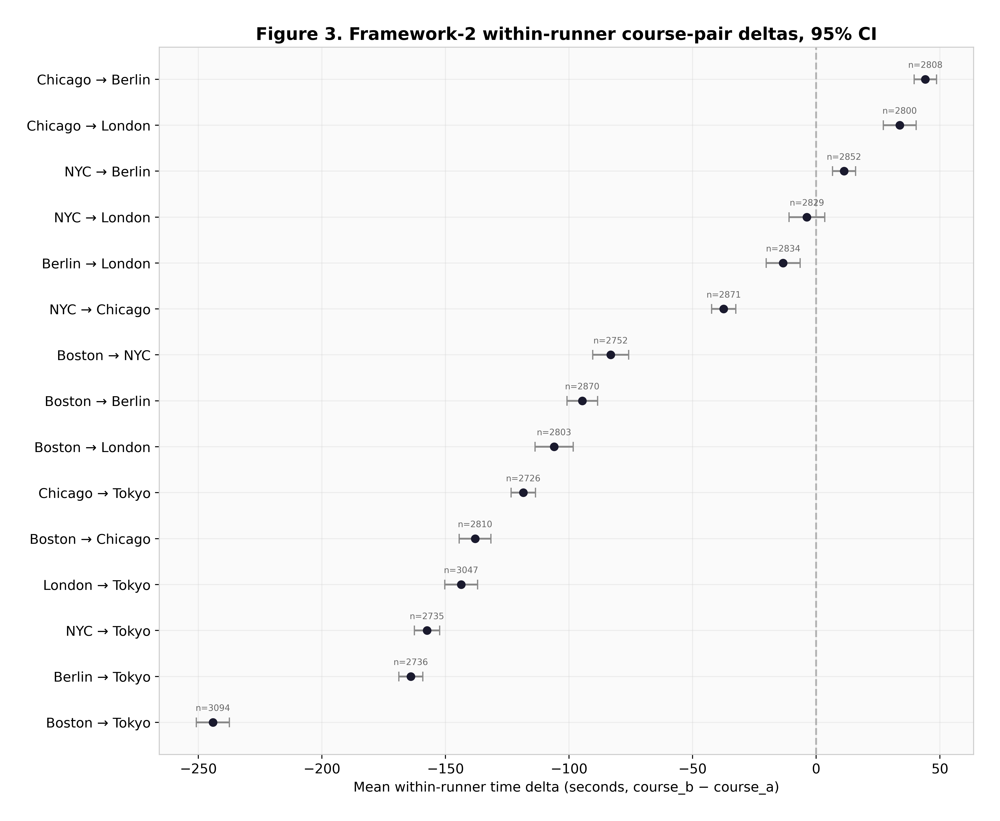
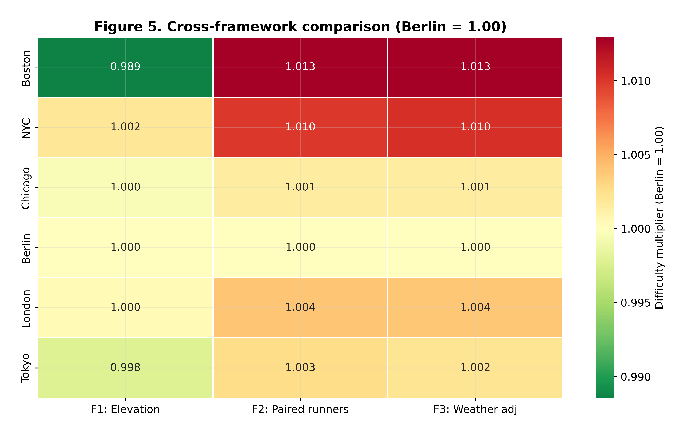
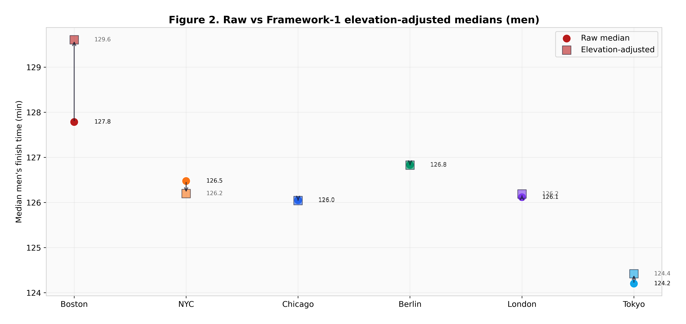
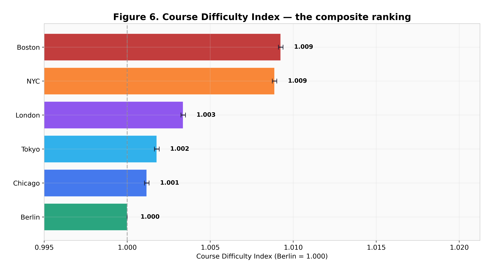
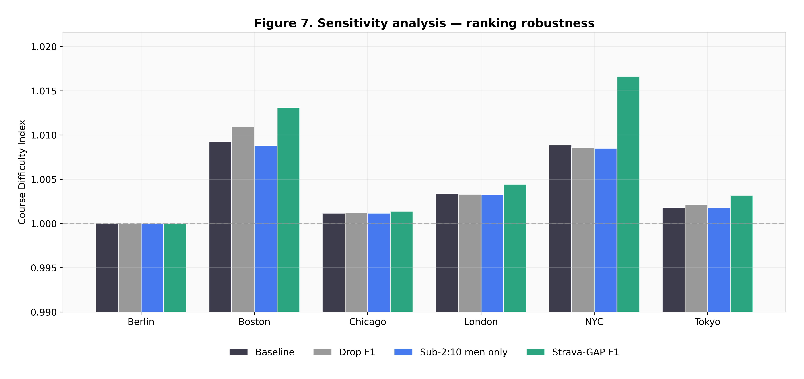

A method test on simulated data
My 2:48 marathon best came in Berlin, the course everyone calls fast, and I wanted to know what a slower course costs in seconds. Race results can't answer that in a way anyone can check, so I simulated a top-100 elite field for the six World Marathon Majors over 2015 to 2024, planted a time penalty on each course, and ran three ranking methods on the result. The within-runner paired comparison put Boston 101.0 seconds behind Berlin against a planted 105, and the weather-normalized top-10 average came within 11.1 seconds everywhere. The grade-adjusted energy-cost model, which reads only the course profiles, says Boston is the fastest of the six.
Boston against Berlin from the paired method (95% bootstrap interval 98.8 to 103.1). The planted value is 105.
The paired method's largest miss, on New York (77.7 against 85). Every estimate is below its planted value.
Boston under the Minetti elevation model: faster than Berlin, because the course drops 136 m net.
Same-athlete course pairs inside 18 months, from 438 simulated athletes who ran more than one Major.
Start · the lane board
Each lane is one course. The first column is the penalty written into
src/build_data.py; the next three are the estimates from
src/analysis.py, all in seconds slower than Berlin for the same runner.
The bar under each estimate is drawn to the same scale, with the planted value as a tick.
Negative estimates (faster than Berlin) are printed without a bar. Scale: full width = 110 s.
Why simulate · a test with a known answer
Nobody knows the true penalty of a course, so an estimate from race results has nothing to be checked against. The build script makes one up. It draws 400 men and 400 women with a fixed flat-course ability, sends 150 of them to each race (weighted toward the faster athletes), and gives each runner a finish time of ability, plus the course penalty, plus a weather penalty, plus normal noise with a 90-second standard deviation. The top 100 per gender are kept: 10,800 results over 54 editions, with 2020 left out.
The planted penalties follow the courses' reputations: Berlin 0, Chicago 12, Tokyo 28, London 35, New York 85, Boston 105 seconds. The weather is a hand-entered table of start temperature, humidity and wind for every edition, which the script describes as anchored to reported race-day conditions (Boston 2018 at 3.9°C with 40 km/h wind, London 2018 at 23.5°C).
Method 2 · within-runner paired
For every athlete who ran two different Majors within 18 months, each finish time is divided by its race's weather multiplier and the difference is taken. Ordinary least squares then fits one offset per course, with Berlin fixed at zero, over all 42,567 pairs. A 2,000-resample bootstrap gives the intervals, which come out near ±2 seconds for every course.
The method lands within 7.3 seconds of every planted value, and below it each time: by 0.6 s on Chicago, 4.0 on Boston, 4.3 on London, 7.0 on Tokyo and 7.3 on New York. Only Chicago's interval contains its planted value. On the other four the shortfall is too large for sampling noise, which makes it a bias, and the code doesn't test where it comes from.

Methods 1 and 3 · terrain and weather
The weather-normalized method averages each edition's top 10 per gender, divides by the same Maughan / El Helou style multiplier (0.5% per °C above 10°C, 0.2% per °C below 5°C, plus small humidity and wind terms), and averages across years. It puts Boston at +100.1 s and New York at +80.3 s, and misses worst on Tokyo (16.9 against 28).
The grade-adjusted method integrates the Minetti et al. (2002) energy-cost polynomial over each course, treating it as 40% climbing at the average up-grade, 40% descending and 20% flat, with small extra penalties for grades over 1.5% and for courses with many turns. It never sees a race result. On these profiles it scores Boston 89 s faster than Berlin and Tokyo 17 s faster. Since the simulation contains no elevation term, the gap between this column and the planted one says nothing about whether the model is right about Boston itself.


The composite · course difficulty index
Each method's offset becomes a factor on a 7,800-second (2:10) reference, and the index is 0.15 × grade-adjusted + 0.50 × paired + 0.35 × weather-normalized. The order is Boston 1.0092, New York 1.0089, London 1.0034, Tokyo 1.0018, Chicago 1.0012, Berlin 1.0000. Boston's composite is only 72 seconds over Berlin, against 101 from the paired fit alone, because the elevation model's negative number pulls it down.
Two of the three sensitivity runs keep that order. Dropping the grade-adjusted method raises Boston to 1.0110, and restricting the paired fit to men's pairs with both times under 2:10 gives 1.0088. The third swaps the top two; with a simpler gain-and-loss elevation model in place of Minetti, New York moves to 1.0166, above Boston at 1.0131.


Limitations · what this doesn't show
The athletes and results are generated by src/build_data.py with seed 42.
The names are combinations of real elite first and last names with a number attached,
and the countries are drawn at random. The earlier version of this page presented
Boston's +101 s as a finding about the real course; it is the paired method's estimate
of a penalty that was set to 105 in code.
The test is also kinder than race data would be. The weather correction divides by the same curve that generated the times, so it is exactly right by construction, and the simulation leaves out pacing strategy, fatigue that depends on where the hills fall, and differences in who chooses to race where. Actual fields have all three.
The course profiles (gain, loss, maximum grade, turn count) are typed into
data/course_profiles.csv; the 40/40/20 split is a rough stand-in for a
segment-by-segment integration. Sydney and Cape Town appear only under the
grade-adjusted method.
Finish · how it was built
python src/build_data.py then python src/analysis.py; matches the committed results